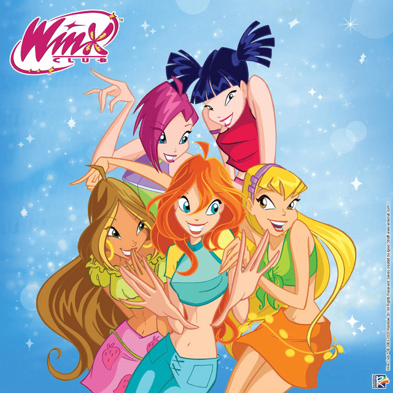
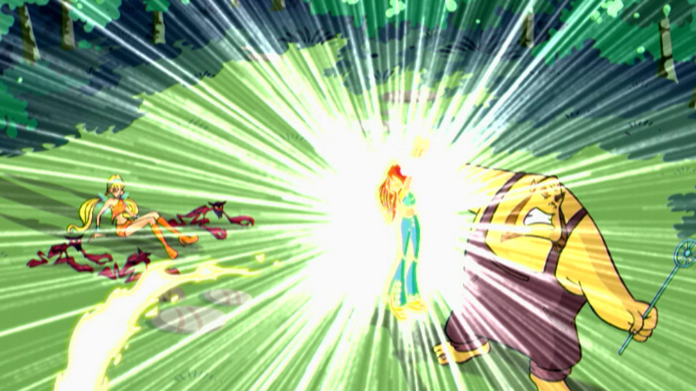
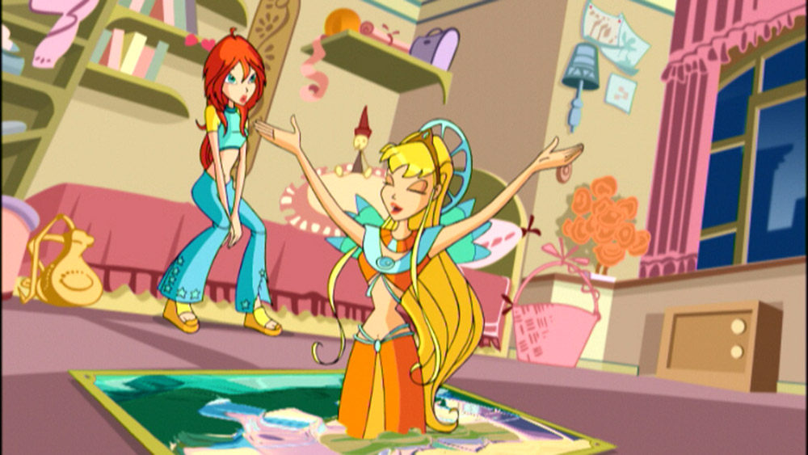
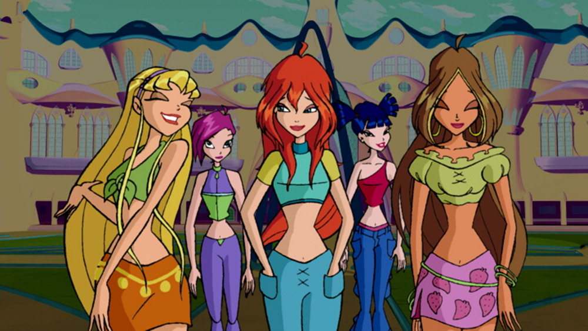
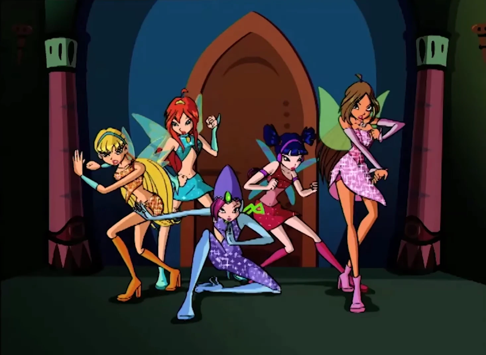
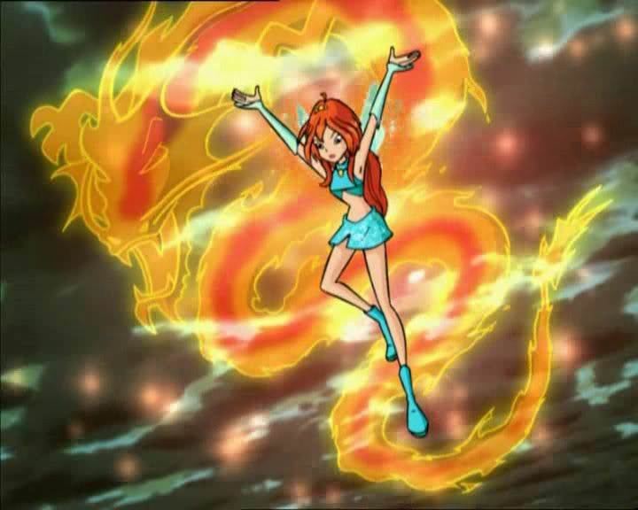
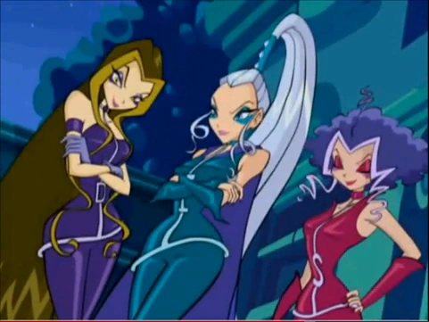

Welcome to the World of Winx Club!
Discover the Magic of Friendship, Adventure, and Self-Discovery in the First Season!
Welcome to the magical realm of Winx Club! In the first season of this iconic animated series, viewers are introduced to a world where fairies and magic exist beyond our imagination. The season sets the stage for exciting adventures, growth, and heartfelt friendships, all wrapped in vibrant animation, enchanting music, and powerful storytelling.
The Story of Season One
The adventure begins when Bloom, an ordinary girl from Earth, discovers she has magical powers while saving Stella, a fairy princess, from trouble. This event sparks a chain of events that brings Bloom to Alfea, a magical school for fairies. At Alfea, Bloom meets four other girls—Stella, Musa, Tecna, and Flora—each with their own unique magical abilities. Together, they form the Winx Club.
  As Bloom and her friends embark on their journey to unlock the mysteries of Bloom's origins and fully control her powers, they must also face dark forces and enemies. The Trix, a trio of witches from Cloud Tower, are constantly scheming to steal the powerful Dragon Flame that resides within Bloom, and their pursuit becomes the central conflict of the season.
 Main Characters
Bloom
The brave and kind-hearted protagonist with the Dragon Flame inside her, Bloom's journey is all about discovering her true origins and embracing her role as a fairy.Stella
The Sun and Moon Fairy and the leader of the group, Stella's shining personality lights up the team. She specializes in light magic and is Bloom’s first friend in the magical world.Musa
The Music Fairy, Musa is an introverted and passionate character who uses the power of sound to fight. She is deeply connected to music and often uses it to channel her emotions.Tecna
The Technology Fairy, Tecna is intelligent and logical, and she is an expert in all things tech-related. She’s the brains of the group, always coming up with plans and solutions.- Flora The Nature Fairy, Flora is gentle, caring, and closely connected to the earth. Her powers are related to plants, and she brings healing energy to the team.
The Magic of Friendship
At its core, Winx Club is a show about the power of friendship and self-discovery. As Bloom and her friends navigate the challenges of being young fairies at Alfea, they learn to trust each other, overcome obstacles, and fight for what they believe in. The girls’ diverse personalities make them a great team, and their strong bond is what allows them to face the dark forces threatening their world.
From the excitement of magical battles to moments of personal growth, the season highlights the importance of believing in oneself, embracing differences, and working together to achieve a common goal.
Villains & Challenges
The first season is filled with intense action and thrilling moments, thanks to the series' villains. The Trix, a trio of witches from Cloud Tower, are the main antagonists of season one. Their mission is to steal the Dragon Flame and harness its power for themselves. With their magical prowess and cunning personalities, the Trix pose a constant threat to Bloom and her friends. However, with determination and courage, the Winx Club is always ready to face the challenge.
Key Themes & Messages
- Empowerment: Season one of Winx Club teaches viewers that true power comes from within. Bloom and her friends each learn to control and embrace their unique abilities, growing stronger together.
- Self-Discovery: Bloom’s journey is a beautiful exploration of finding one’s true self and understanding where you come from. She learns about her origins and how her powers are connected to her destiny.
- Friendship: The heart of the series lies in the friendships that the Winx girls form. Together, they face challenges, celebrate victories, and grow as individuals.
- Courage: The Winx Club faces many dangerous and life-changing moments, but they always show courage in the face of fear. Their bravery is inspiring for all who watch them.
Why Watch Season One?
If you love magical worlds filled with adventure, vibrant characters, and unforgettable music, then Winx Club is the show for you! The first season will captivate you with its heartfelt storytelling, exciting action, and stunning animation. Whether you're discovering the world of Winx Club for the first time or revisiting the magic, there's no better time to dive in!
Join the Winx Club Today!
Ready to experience the magic? Watch the first season of Winx Club and immerse yourself in a world of fantasy, friendship, and adventure.